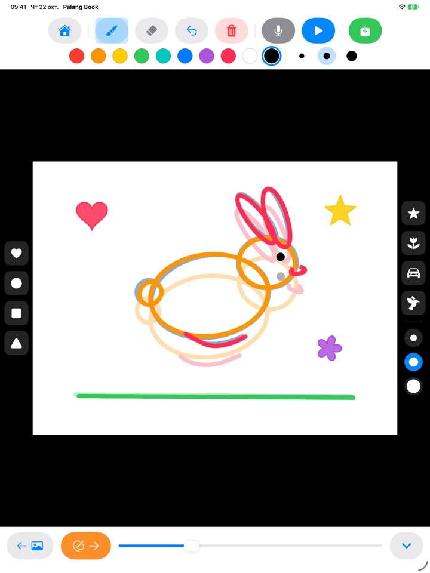
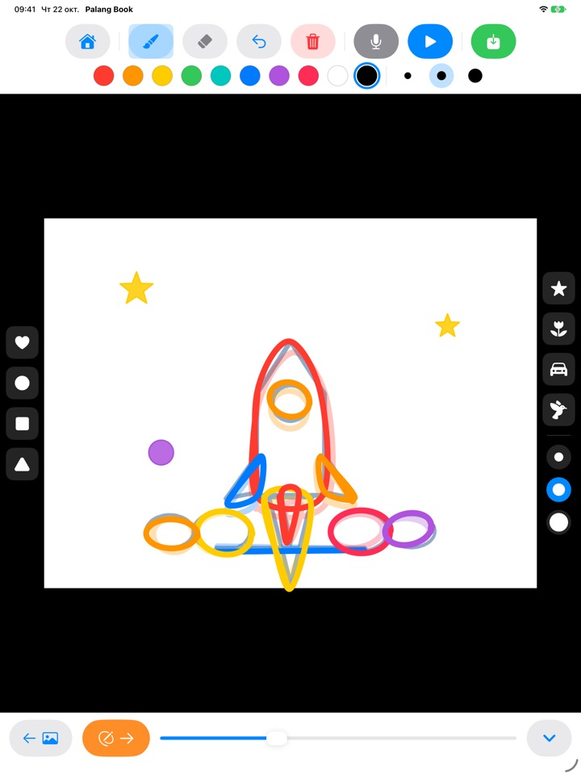
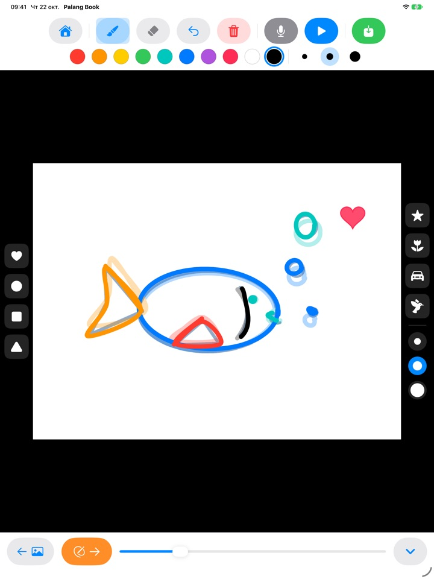
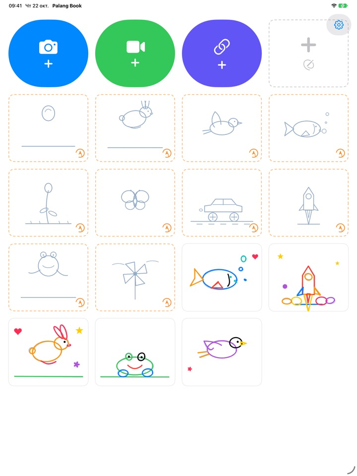

Обведи рисунок,
и он оживёт
Ребёнок обводит бледный контур, страницу за страницей. Нажмите «Воспроизвести»: контур исчезнет, и двигаться будут только его собственные линии. Все кнопки здесь картинки, поэтому справиться можно самому, даже не умея читать.
Для iPad. Три набора для обводки бесплатны.

Нарисуйте несколько страниц
Нарисуйте что-нибудь и нажмите оранжевую стрелку, чтобы перейти к следующей странице. Предыдущая будет слегка просвечивать. Через две-три страницы нажмите синюю кнопку воспроизведения.
Жаль, когда отличный рисунок так и остаётся неподвижным
Анимация означает рисовать почти одну и ту же картинку снова и снова с крошечными изменениями, и сам ребёнок не знает, с чего начать. Palang Book подкладывает бледный контур, в котором движение уже заложено, так что остаётся только вести по линии. Нажали «Воспроизвести», и рисунок ожил.
Ведите по линии, и получится мультик
Прыгающий мячик, скачущий зайчик, летящая птица, плывущая рыбка, распускающийся цветок, бабочка, гоночная машинка, ракета, лягушка и вертушка. В каждом наборе около 20 страниц с контурами.
Предыдущая страница слегка просвечивает, чтобы следующую было легко нарисовать, а при воспроизведении контур исчезает, и двигается только рисунок ребёнка.

Штампы и десять цветов
Одним касанием ставятся сердечки, круги, квадраты, треугольники, звёзды, цветы, машинки и птички. У штампов и кистей по три размера, а цветов десять.
Ластик и отмена помогают быстро исправить ошибку. Рисовать можно пальцем или Apple Pencil.

Поверх своих видео или на чистом листе
Добавьте видео, которое сняли сами или нашли в приложении «Фото», и обводите прямо по нему. Если скрыть фон, на белом листе одна за другой проиграются только нарисованные сцены. Есть и чистый флипбук совсем без контуров.
Нажмите на микрофон, чтобы записать голос ребёнка вместе с анимацией, а готовую работу сохраните в «Фото» как видео и покажите родным.

Начать можно в три шага
- 1
Выберите карточку с контуром
Карточки с оранжевой пунктирной рамкой на главном экране предназначены для обводки.
- 2
Нарисуйте и листайте
Оранжевая стрелка переносит на следующую страницу.
- 3
Нажмите «Воспроизвести»
Нажмите синюю кнопку воспроизведения, и рисунок задвигается.
Что делают кнопки
- Оранжевая пунктирная карточка
- Начать обводку по контуру
- Серая пунктирная карточка
- Чистый флипбук
- Синяя камера
- Рисовать поверх снятого видео
- Зелёное видео
- Добавить видео из «Фото»
- Ссылка цвета индиго
- Вставить ссылку на видеофайл
- Оранжевая стрелка
- Следующая страница
- Синяя кнопка воспроизведения
- Запустить анимацию, повторное нажатие останавливает
- Изогнутая стрелка
- Отменить последнюю линию
- Красная корзина
- Очистить всю страницу (отмена всё вернёт)
- Микрофон
- Записать голос, пока анимация повторяется
- Значок видео
- Скрыть видеофон (розовые полоски значат, что видны только рисунки)
- Зелёная кнопка сохранения
- Сохранить в «Фото» как видео
Чтобы удалить работу, нажмите и удерживайте её карточку на главном экране. Вместе с ней удалятся рисунки, запись голоса и добавленное видео.
Многое можно попробовать бесплатно. Понравится, есть пожизненный доступ.
Бесплатно
- 3 набора для обводки (мячик, зайчик, цветок)
- Хранение 3 работ
- Добавление 1 видео
- Чистые флипбуки до 10 страниц
- Запись голоса до 15 секунд
- Штампы, цвета, кисти и сохранение в «Фото»
Пожизненный доступ
- Все наборы для обводки, включая будущие
- Без ограничений на работы, страницы, видео и время записи
- Без карточки Palang Book в конце сохранённых видео
Разовая покупка, а не подписка. Через Семейный доступ работает на всех iPad в семье.
Видео, сохранённые бесплатно, заканчиваются короткой карточкой Palang Book. Если вы пользовались Palang Book ещё до появления пожизненного доступа, у вас уже всё открыто.
Вопросы
Как работают контуры?
Светло-голубые линии и есть контур. Ребёнок обводит их, а когда вы нажимаете «Воспроизвести», контур исчезает и двигаются только его линии. Около 20 страниц, и анимация готова.
Хочу воспроизвести и сохранить только рисунок, без видео.
В работе с видео нажмите значок видео на верхней панели, чтобы он стал розовым в полоску. Тогда и при воспроизведении, и при сохранении будет только рисунок на белом фоне. Проигрываются лишь нарисованные сцены, так что несколько рисунков поверх длинного ролика дадут короткую анимацию.
Куда сохраняется готовое видео?
Нажмите зелёную кнопку сохранения у правого края панели, и видео mp4 сохранится в «Фото». При первом сохранении разрешите доступ к фотографиям.
Как добавить голос?
Нажмите кнопку микрофона, чтобы записывать, пока анимация повторяется, и кнопку стоп, чтобы закончить. Новая запись заменяет старую. Голос попадёт в видео при сохранении.
Ссылка на видео не открывается.
Проверьте подключение к интернету и убедитесь, что адрес ведёт прямо на видеофайл (например, заканчивается на .mp4). Ссылки на страницы видеохостингов открыть нельзя. Используйте свои видео или те, что разрешено свободно использовать.
Ладонь оставляет следы.
Изогнутая стрелка убирает последнюю линию, а красная корзина очищает всю страницу (отмена всё вернёт). Если такое случается часто, напишите нам, и мы поможем.
Зачем пример на умножение перед экраном покупки?
Чтобы дети не попадали на экран покупки сами. Когда ребёнок нажимает на что-то закрытое, появляется большой замок и надпись «Покажите это взрослому», а экран покупки открывается, только когда взрослый решит пример на умножение.
Как восстановить покупку?
Нажмите шестерёнку в правом верхнем углу главного экрана, выберите «Пожизненный доступ», ответьте на вопрос для взрослых и нажмите «Восстановить покупки». Нужно войти с той же учётной записью Apple, с которой была сделана покупка.
Как отправить отзыв из приложения?
Нажмите шестерёнку на главном экране и выберите «Отправить отзыв». Можно приложить скриншот, а если хотите получить ответ, оставьте имя и почту. Просим, чтобы отзывы отправлял кто-то из родителей.
Вы собираете данные о моём ребёнке?
Нет. Palang Book не собирает никаких личных данных, а рисунки и записи остаются на вашем iPad. Подробности в Политике конфиденциальности.
Вопросы или проблемы? Пишите на mizzking75@gmail.com. Обычно мы отвечаем в течение 2–3 дней.